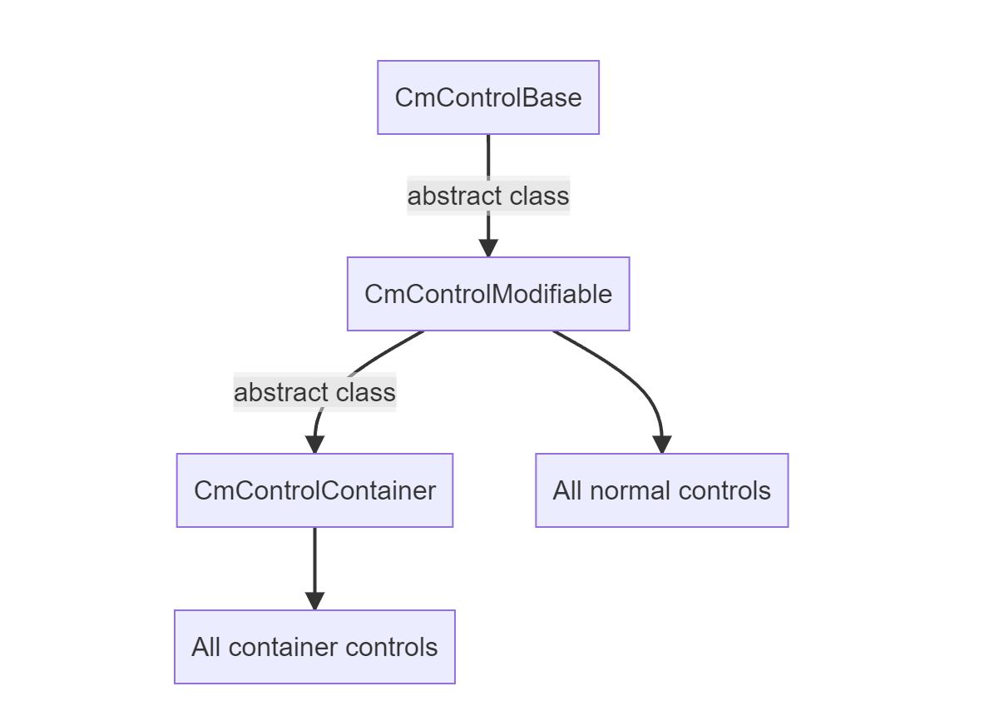

UI controls
Introduction
CoDriven Advanced UI is based on UI toolkit. There are a few extension controls like CmDraggableScrollView and others, but mostly controls are the same as in UI toolkit. So what is the benefit of this?. CoDriven Advanced UI has a different approach to:
- you won't have to search for styles assigned to elements in controls, because styling controls is done using modifiers instead of USS/CSS code. This will make your menu development faster. More about this here,
- event handling is really easy. More about this here,
- separation of concerns in case of screens based on these controls and easy switching between screens by using Screen Manager, Screens and Screen Part. See Screen Manager, Screen and Screen Part
- styling dropdown is difficult in UI Toolkit and require to assign system uss as parent and here CoDriven Advanced UI will help you to forget about these problems and just style your dropdown.
- the whole system is better solution for styling, theming and language change.
Controls

important - read this section before the documentation for indivitual controls.
All CoDriven Advanced UI controls inherits from CmControlBase and all of them are holding reference to their counterparts controls from UI Toolkit.
For example CmButton holds reference to Button, or CmTextField holds reference to TextField of UI Toolkit.
You can get original control by using CmControlBase.GetVisualElement();
available methods for base control - CmControlBase
public void SetName(string name)
public string GetName()
/// get or set index of control in focusable ring. The ring of controls that can take focus.
/// You can set index of that focus then you can control which control will be focused next by changing
/// active focused control.
public void SetTabIndex(int tabIndex)
public int GetTabIndex()
// enabled state
public virtual void SetEnabled(bool enabled)
/// set custom selector.
public void SetCustomSelector(string modifierName)
/// remove custom selector.
public void RemoveCustomSelector(string modifierName)
/// control focused state
public void Focus()
public void Blur()
public virtual void SetFocusable(bool focusable)
// bring to front or back
public void BringToFront()
public void SendToBack()
// control visibility
public void Hide()
public void Show()
public virtual void SetVisible(bool visible)
public bool IsVisible()
almost all methods are self-explanatory. There are mostly delegates from base VisualElement methods from UI toolkit.
so all controls have above methods.
CmControlContainer - base controls container
All container controls are inherit from base container CmControlContainer. You will add your own controls to that containers by calling control.AddContent(). For example:
private CmColumn CreateLeftPanel()
{
var column = new CmColumn();
column.AddContent(new CmButton(...));
column.AddContent(new CmButton(...));
return column;
}
finding control in CmControlContainer
You can find any control inside container by calling:
- CmControlContainer.FindControl
("optional_control_name") - CmControlContainer.Q
("optional_control_name")
var label = cmControl.FindControl<CmLabel>();
label.SetText(column.title);
Behaviours (AddControlBehaviour())
All controls inherited from CmControlModifiable which include function AddControlBehaviour
Behaviours was made to add some functionality to control that can be reused.
Currently there is one behavior available:
- CmControlFloatingWindowBehaviour - add this behaviour to any container to make it like floating Window that you can drag freely using mouse
you can add your own behaviour by inherit the base class of behaviours CmControlBehaviourBase
All controls containers
- CmColumn click for description
- CmRow click for description
- CmDropDownField click for description
- CmFoldout click for description
- CmGroupBox click for description
- CmPopupWindow click for description
- CmScrollView click for description
Simple controls
- CmButton click for description
- CmDraggableScrollView click for description
- CmHelpBox click for description
- CmImage click for description
- CmLabel click for description
- CmListView click for description
- CmMultiColumnListView click for description
- CmProgressBar click for description
- CmRadioButton click for description
- CmScroller click for description
- CmSlider click for description
- CmTextField click for description
- CmToggle click for description
Controls for Unity editor
- CmCurveFiled click for description
- CmEnumFlagsField click for description
- CmFloatField click for description
- CmIntegerField click for description
- CmLongField click for description
- CmMaskField click for description
- CmObjectField click for description
- CmPropertyField click for description
- CmTagField click for description
- CmToolbar click for description
currently in editor controls are only delegates to unity version without "Cm" suffix, but it still helps with styling and events handling of these controls